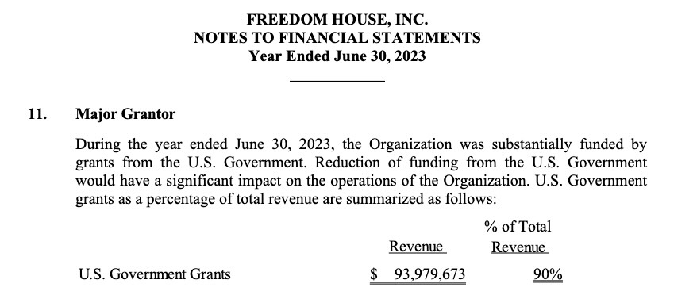
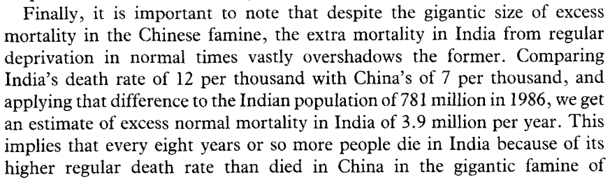
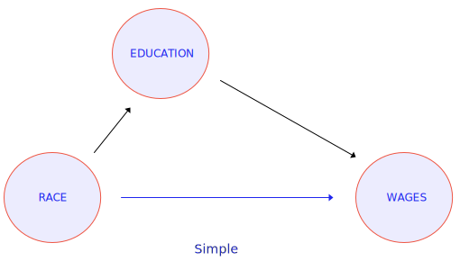
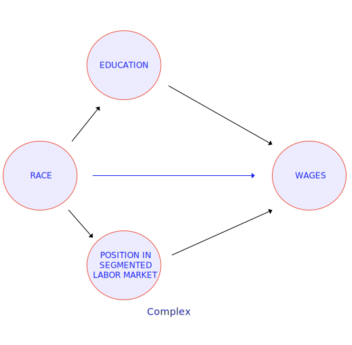
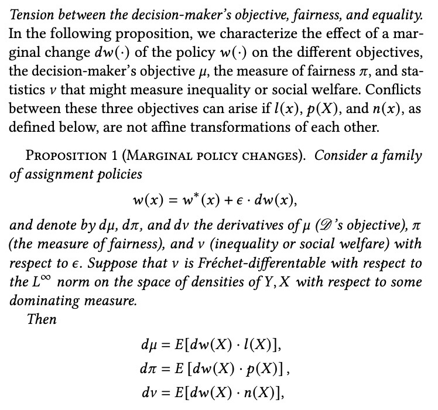
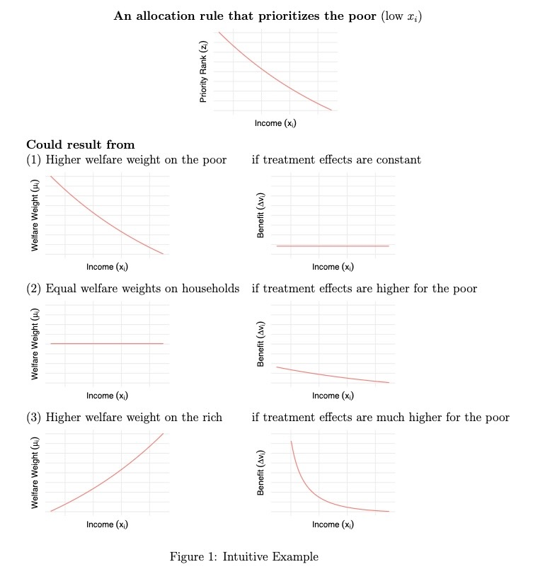

Week 2: Machine Learning, Training Data, and Bias
DSAN 5450: Data Ethics and Policy
Spring 2024, Georgetown University
Class Sessions
Ethical Issues in Data Science
- Data Science for Who?
- Operationalization
- Fair Comparisons
- Implementation
Data Science for Who(m)?
- What are the processes by which data is measured, recorded, and distributed?

Example: Measuring “Freedom” and “Human Rights”
- Freedom House Ratings are the most common measure of “freedom” in a country, across social science literature; US State Dept. Country Reports on Human Rights Practices are the most common measure of “human rights” in a country, across social science literature
- (you can take my word for it, or browse e.g. American Political Science Review)
- …So what’s the issue? (What is Jeff whining about this time?)

Example: Measuring “Freedom” and “Human Rights”
Operationalization
- Think of common claims made on basis of “data”:
- Markets create economic prosperity
- A glass of wine in the evening prevents cancer
- Policing makes communities safer
- How exactly are “prosperity”, “preventing cancer”, “policing”, “community safety” being measured?

What Is Being Compared?
- Are countries with 1 billion people comparable to countries with 10 million people?
- Are countries which were colonized comparable to the colonizing countries?
- When did the colonized countries gain independence?

Implementation


Fairness‚Ķ üßê



‚ĶAnd INVERSE Fairness ü§Ø

Ethical Issues in Applying Data Science

Facial Recognition Algorithms


Large Language Models


Military and Police Applications of AI

Machine Learning at 30,000 Feet
Three Component Parts of Machine Learning
- A cool algorithm üòéüòç
- [Possibly benign but possibly biased] Training data ‚ùìüßê
- Exploitation of below-minimum-wage human labor üòûü§ê (Dube et al. 2020, like and subscribe yall, get those ‚ù§Ô∏ès goin)
A Cool Algorithm üòéüòç

Training Data With Acknowledged Bias
- One potentially fruitful approach to fairness: since we can’t eliminate it, bring it out into the open and study it!
- This can, at very least, help us brainstorm how we might “correct” for it (next slides!)

From Gendered Innovations in Science, Health & Medicine, Engineering, and Environment
Word Embeddings

- Notice how the \(x\)-axis has been selected by the researcher specifically to draw out (one) gendered dimension of language!
- \(\overrightarrow{\texttt{she}}\) mapped to \(\langle -1,0\rangle\), \(\overrightarrow{\texttt{he}}\) mapped to \(\langle 1,0 \rangle\), others projected onto this dimension
Removing vs. Studying Biases


References
Ayyub, Rami. 2019. “App Aims to Help Palestinian Drivers Find Their Way Around Checkpoints.” The Times of Israel, August. https://www.timesofisrael.com/app-aims-to-help-palestinian-drivers-find-their-way-around-checkpoints/.
Björkegren, Daniel, Joshua E. Blumenstock, and Samsun Knight. 2022. “(Machine) Learning What Policies Value.” arXiv. https://doi.org/10.48550/arXiv.2206.00727.
Bolukbasi, Tolga, Kai-Wei Chang, James Y Zou, Venkatesh Saligrama, and Adam T Kalai. 2016. “Man Is to Computer Programmer as Woman Is to Homemaker? Debiasing Word Embeddings.” In Advances in Neural Information Processing Systems. Vol. 29. Curran Associates, Inc. https://proceedings.neurips.cc/paper_files/paper/2016/hash/a486cd07e4ac3d270571622f4f316ec5-Abstract.html.
D’Ignazio, Catherine, and Lauren F. Klein. 2020. Data Feminism. MIT Press.
Drèze, Jean, and Amartya Sen. 1991. “China and India.” In Hunger and Public Action, 0. Oxford University Press. https://doi.org/10.1093/0198283652.003.0011.
Dube, Arindrajit, Jeff Jacobs, Suresh Naidu, and Siddharth Suri. 2020. “Monopsony in Online Labor Markets.” American Economic Review: Insights 2 (1): 33–46. https://doi.org/10.1257/aeri.20180150.
Facia.ai. 2023. “Facial Recognition Helps Vendors in Healthcare.” Facia.ai. https://facia.ai/blog/facial-recognition-healthcare/.
Kasy, Maximilian, and Rediet Abebe. 2021. “Fairness, Equality, and Power in Algorithmic Decision-Making.” In Proceedings of the 2021 ACM Conference on Fairness, Accountability, and Transparency, 576–86. FAccT ’21. New York, NY, USA: Association for Computing Machinery. https://doi.org/10.1145/3442188.3445919.
Kozlowski, Austin C., Matt Taddy, and James A. Evans. 2019. “The Geometry of Culture: Analyzing the Meanings of Class Through Word Embeddings.” American Sociological Review 84 (5): 905–49. https://doi.org/10.1177/0003122419877135.
Lerman, Amy E., and Vesla M. Weaver. 2014. Arresting Citizenship: The Democratic Consequences of American Crime Control. University of Chicago Press.
McNeil, Sam. 2022. “Israel Deploys Remote-Controlled Robotic Guns in West Bank.” AP News, November. https://apnews.com/article/technology-business-israel-robotics-west-bank-cfc889a120cbf59356f5044eb43d5b88.
Ouz. 2023. “Google Pixel 8 Face Unlock Vulnerability Discovered, Allowing Others to Unlock Devices.” Gizmochina. https://www.gizmochina.com/2023/10/16/google-pixel-8-face-unlock/.
Schiebinger, Londa, Ineke Klinga, Hee Young Paik, Inés Sánchez de Madariaga, Martina Schraudner, and Marcia Stefanick. 2020. “Machine Translation: Gendered Innovations.” http://genderedinnovations.stanford.edu/case-studies/nlp.html#tabs-2.
Stiglitz, Joseph E., Amartya Sen, and Jean-Paul Fitoussi. 2010. Mismeasuring Our Lives: Why GDP Doesn’t Add Up. The New Press.
Wang, Yilun, and Michal Kosinski. 2018. “Deep Neural Networks Are More Accurate Than Humans at Detecting Sexual Orientation from Facial Images.” Journal of Personality and Social Psychology 114 (2): 246–57. https://doi.org/10.1037/pspa0000098.
Wellcome Collection. 1890. “Composite Photographs: "The Jewish Type".” https://wellcomecollection.org/works/ngq29vyw.